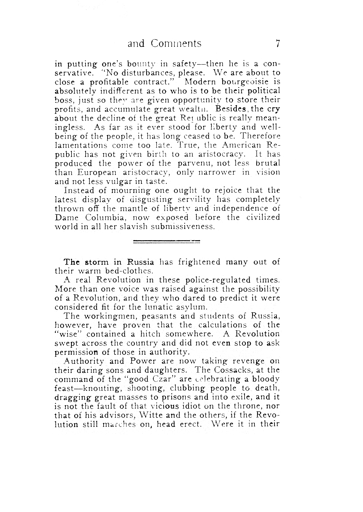

(1906-1918) Mother Earth Journal

Emma Goldmann &
→ "The Open Road" was the orginal name, but they got lawsuit by another journal with the same name. → The first journal was sixty-four pages long, measured 5 inches by 8 inches, and had a price of ten cents. → Mother Earth remained in monthly circulation until August 1918 → the message of the name was not environmental but libertarian. → The time around The Mother Earth is often called by the era of Lyrical Left. → The journal was an comment on the contemporary scene → In August 1918, for the final issue of Mother Earth — which was confiscated by the U.S. Post Office → Mother Earth Bulletin was forced to close.
THERE was a time when men imagined the Earth as the center of the universe. The stars, large and small, they believed were created merely for their delectation. It was their vain conception that a supreme being, weary of solitude, had manufactured a giant toy and put them into possession of it. When, however, the human mind was illumined by the torch-light of science, it came to understand that the Earth was but one of a myriad of stars floating in infinite space a mere speck of dust. Man issued from the womb of Mother Earth, but he knew it not, nor recognized her, to whom he owed his life. In his egotism, he sought an explanation of himself in the infinite, and out of his efforts there arose the dreary doctrine that he was not related to the Earth, that she was but a temporary resting place for his scornful feet and that she held nothing for him but temptation to degrade himself. Interpreters and prophets of the infinite sprang into being, creating the "Great Beyond" and proclaiming Heaven and Hell, between which stood the poor, trembling human being, tormented by that priest-born monster, Conscience.
In this frightful scheme, gods and devils waged eternal war against each other with a wretched man as the prize of victory; and the priest, self-constituted interpreter of the will of the gods, stood in front of the only refuge from harm and demanded as the price of the entrance that ignorance, that asceticism, that self-abnegation which could but end in the complete subjugation of man to superstition. He was taught that Heaven, the refuge, was the very antithesis of Earth, which was the source of sin. To gain for himself a seat in Heaven, a man devastated the Earth. Yet she renewed herself, the good mother, and came again each Spring, radiant with youthful beauty, beckoning her children to come to her bosom and partake of her bounty. But ever the air grew thick with mephitic darkness, ever a hollow voice was heard calling "Touch not the beautiful form of the sorceress; she leads to sin !" But if the priests decried the Earth, there were others who found in it a source of power and who took possession of it. Then it happened that the autocrats at the gates of Heaven joined forces with the powers that had taken possession of the Earth; and humanity began its aimless, monotonous march. But the good mother sees the bleeding feet of her children, she hears their moans, and she is ever calling to them that she is theirs. To the contemporaries of George Washington, Thomas Paine, and Thomas Jefferson, America appeared vast, boundless, full of promise. Mother Earth, with the sources of vast wealth hidden within the folds of her ample bosom, extended her inviting and hospitable arms to all those who came to her from arbitrary and despotic lands.
MOTHER EARTH will endeavor to attract and appeal to all those who oppose encroachment on public and individual life. It will appeal to those who strive for something higher, weary of the commonplace; to those who feel that stagnation is a deadweight on the firm and elastic step of progress; to those who breathe freely only in limitless space: to those who long for the tender shade of a new dawn for humanity free from the dread of want, the dread of starvation in the face of mountains of riches. The Earth free for the free individual!
Emma Goldmann &
Alexander Berkman
→ "The Open Road" was the orginal name, but they got lawsuit by another journal with the same name. → The first journal was sixty-four pages long, measured 5 inches by 8 inches, and had a price of ten cents. → Mother Earth remained in monthly circulation until August 1918 → the message of the name was not environmental but libertarian. → The time around The Mother Earth is often called by the era of Lyrical Left. → The journal was an comment on the contemporary scene → In August 1918, for the final issue of Mother Earth — which was confiscated by the U.S. Post Office → Mother Earth Bulletin was forced to close.
Part 1
THERE was a time when men imagined the Earth as the center of the universe. The stars, large and small, they believed were created merely for their delectation. It was their vain conception that a supreme being, weary of solitude, had manufactured a giant toy and put them into possession of it. When, however, the human mind was illumined by the torch-light of science, it came to understand that the Earth was but one of a myriad of stars floating in infinite space a mere speck of dust. Man issued from the womb of Mother Earth, but he knew it not, nor recognized her, to whom he owed his life. In his egotism, he sought an explanation of himself in the infinite, and out of his efforts there arose the dreary doctrine that he was not related to the Earth, that she was but a temporary resting place for his scornful feet and that she held nothing for him but temptation to degrade himself. Interpreters and prophets of the infinite sprang into being, creating the "Great Beyond" and proclaiming Heaven and Hell, between which stood the poor, trembling human being, tormented by that priest-born monster, Conscience.
Part 2
In this frightful scheme, gods and devils waged eternal war against each other with a wretched man as the prize of victory; and the priest, self-constituted interpreter of the will of the gods, stood in front of the only refuge from harm and demanded as the price of the entrance that ignorance, that asceticism, that self-abnegation which could but end in the complete subjugation of man to superstition. He was taught that Heaven, the refuge, was the very antithesis of Earth, which was the source of sin. To gain for himself a seat in Heaven, a man devastated the Earth. Yet she renewed herself, the good mother, and came again each Spring, radiant with youthful beauty, beckoning her children to come to her bosom and partake of her bounty. But ever the air grew thick with mephitic darkness, ever a hollow voice was heard calling "Touch not the beautiful form of the sorceress; she leads to sin !" But if the priests decried the Earth, there were others who found in it a source of power and who took possession of it. Then it happened that the autocrats at the gates of Heaven joined forces with the powers that had taken possession of the Earth; and humanity began its aimless, monotonous march. But the good mother sees the bleeding feet of her children, she hears their moans, and she is ever calling to them that she is theirs. To the contemporaries of George Washington, Thomas Paine, and Thomas Jefferson, America appeared vast, boundless, full of promise. Mother Earth, with the sources of vast wealth hidden within the folds of her ample bosom, extended her inviting and hospitable arms to all those who came to her from arbitrary and despotic lands.

Mother Earth ready to give herself alike to all her children. But soon she was seized by the few, stripped of her freedom, fenced-in, a prey to those who were endowed with cunning and unscrupulous shrewdness. They, who had fought for independence from the British yoke, soon became dependent among themselves; dependent on possessions, on wealth, on power. Liberty escaped into the wilderness, and the old battle between the patrician and the plebeian broke out in the new world, with greater bitterness and vehemence. A period of but a hundred years had sufficed to turn a great republic, once gloriously established, into an arbitrary state which subdued a vast number of its people into material and intellectual slavery, while enabling the privileged few to monopolize every material and mental resource. During the last few years, American journalists have had much to say about the terrible conditions in Russia and the supremacy of the Russian censor. Have they forgotten the censor here? a censor far more powerful than him of Russia. Have they forgotten that every line they write is dictated by the political color of the paper they write for; by the advertising firms; by the money power; by the power of respectability; by Comstock? Have they forgotten that the literary taste and critical judgment of the mass of the people have been successfully molded to suit the will of these dictators, and to serve as a good business basis for shrewd literary speculators? The number of Rip Van Winkles in life, science, morality, art, and literature is very large. Innumerable ghosts, such as Ibsen saw when he analyzed the moral and social conditions of our life, still, keep the majority of the human race in awe. Jefferson, America appeared vast, boundless, full of promise. Mother Earth, with the sources of vast wealth hidden within the folds of her ample bosom, extended her inviting and hospitable arms to all those who came to her from arbitrary and despotic lands.
Part 3
Mother Earth ready to give herself alike to all her children. But soon she was seized by the few, stripped of her freedom, fenced-in, a prey to those who were endowed with cunning and unscrupulous shrewdness. They, who had fought for independence from the British yoke, soon became dependent among themselves; dependent on possessions, on wealth, on power. Liberty escaped into the wilderness, and the old battle between the patrician and the plebeian broke out in the new world, with greater bitterness and vehemence. A period of but a hundred years had sufficed to turn a great republic, once gloriously established, into an arbitrary state which subdued a vast number of its people into material and intellectual slavery, while enabling the privileged few to monopolize every material and mental resource. During the last few years, American journalists have had much to say about the terrible conditions in Russia and the supremacy of the Russian censor. Have they forgotten the censor here? a censor far more powerful than him of Russia. Have they forgotten that every line they write is dictated by the political color of the paper they write for; by the advertising firms; by the money power; by the power of respectability; by Comstock? Have they forgotten that the literary taste and critical judgment of the mass of the people have been successfully molded to suit the will of these dictators, and to serve as a good business basis for shrewd literary speculators? The number of Rip Van Winkles in life, science, morality, art, and literature is very large. Innumerable ghosts, such as Ibsen saw when he analyzed the moral and social conditions of our life, still, keep the majority of the human race in awe. Jefferson, America appeared vast, boundless, full of promise. Mother Earth, with the sources of vast wealth hidden within the folds of her ample bosom, extended her inviting and hospitable arms to all those who came to her from arbitrary and despotic lands.
Part 4
MOTHER EARTH will endeavor to attract and appeal to all those who oppose encroachment on public and individual life. It will appeal to those who strive for something higher, weary of the commonplace; to those who feel that stagnation is a deadweight on the firm and elastic step of progress; to those who breathe freely only in limitless space: to those who long for the tender shade of a new dawn for humanity free from the dread of want, the dread of starvation in the face of mountains of riches. The Earth free for the free individual!